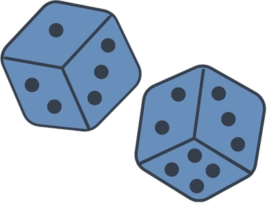

I’ve been programming off and on since I was 11 years old, but nothing quite stuck until I made a major career shift and dove into web development. I love the mix of creativity, problem-solving, and continual refinement that this field calls for, and the satisfaction of building something that looks and feels great to use. The 11-year-old me would be thrilled to know that I get to do this for a living now, and I’m excited to see where this career path takes me.
Here are some fun facts about me when I’m not building websites:
- I love music, both listening and making it. I play multiple instruments, but my favorites to play are guitar and drums. Some of my favorite bands are the Kinks, Cardiacs, and Tame Impala.
-

Playing board games is my latest hobby. I find a lot of joy in playing them, even learning how to play games I don’t own yet. I’m always looking for more opportunities and people to play them with. Some of my favorites are Everdell, Codenames, and Sushi Go. - I built my first PC at 14 and have been a PC gamer ever since. Playing computer games is one of my favorite ways to decompress after a busy day, and I love exploring the worlds that other people have created. Some of my favorite games are Bloodborne, the Witcher series, and the Binding of Isaac: Rebirth.
- I hid a secret somewhere on this website. Can you find it? Hover here for a hint